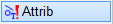
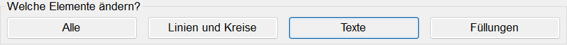
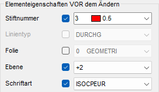
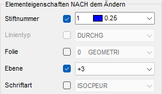
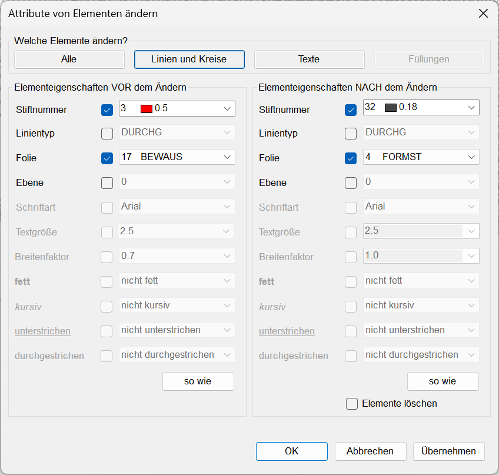
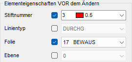
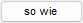

")
")
In einem gegebenen Bereich werden die Elemente nach bestimmten Kriterien ausgewählt und können dann über die Attribute gezielt verändert werden.
|
Hinweis: |
|
Textfelder können mit dieser Funktion nicht geändert werden. Nutzen Sie zum Ändern von Textfeldern die Funktion [Konst1 | Texte → ändern]. |

1.Elemente selektieren
§Ziehen Sie einen Rahmen durch das Anklicken von zwei Punkten um die zu ändernden Zeichenelemente oder klicken Sie einzelne Elemente an. [1.Punkt/Element]; [2.Punkt].
-Die Zeichenelemente werden markiert.
-Um Elemente wieder abzuwählen, klicken Sie im unteren Funktionsbereich auf Entfer. Ziehen Sie einen Rahmen um die entsprechenden Elemente oder klicken Sie einzelne Elemente an. Bei gedrückter Umschalttaste (Shift) wird automatisch der Entfer-Modus aktiviert – am Cursor wird ein Minuszeichen eingeblendet.
§Bestätigen Sie die Auswahl mit Rechtsklick.
Der Dialog Attribute von Elementen ändern wird geöffnet.
2.Bedingungen angeben und Attribute ändern
§Wählen Sie im oberen Dialogbereich zunächst, auf welche Elementgruppe sich die Änderungen beziehen sollen. Je nachdem, welche Elementgruppe Sie wählen, werden zusätzliche Eigenschaften verfügbar.
 |
§Dialogbereich "Elementeigenschaften VOR dem Ändern":
Setzen Sie bei den Eigenschaften einen Haken, die für die Auswahl gelten sollen. In den Auswahlfeldern werden nur die Eigenschaften (z. B. Stiftnummern) angeboten, die im selektierten Bereich vorkommen.
Beispiel: Innerhalb der selektierten Zeichenelemente sollen alle Texte gewählt werden, die die Stiftnummer 3 haben, in der Ebene 2 liegen und in der Schriftart "ISOCPEUR" geschrieben sind. Alle Elemente, auf die diese Eigenschaften zutreffen, werden in ihrer Originalfarbe dargestellt und werden mit den unter Elementeigenschaften NACH dem Ändern gewählten Eigenschaften geändert. Alle übrigen Elemente werden in der Farbe für Elemente im Hintergrund angezeigt. Die Eigenschaft "Folie" soll nicht berücksichtigt werden. Da nach Texten gesucht wird, ist die Eigenschaft "Linientyp" nicht verfügbar.
 |
Wenn Sie keine Haken setzen, werden alle Elemente der gewählten Elementgruppe mit den unter Elementeigenschaften NACH dem Ändern ausgewählten Eigenschaften geändert. Zum Beispiel können Texte mit beliebigen Stiftnummern in Stiftnummer 1 geändert werden.
§Dialogbereich "Elementeigenschaften NACH dem Ändern":
Setzen Sie bei den Eigenschaften einen Haken, die geändert werden sollen.
Beispiel: Die gefundenen Texte sollen die Stiftnummer 1 erhalten und in die Ebene 3 verschoben werden. Da die Schriftart sich nicht ändern soll, entfernen Sie den Haken.
 |
Sie können mehrere Eigenschaften auswählen und diese kombinieren, um bestimmte Elemente gezielt zu ändern.
3.Auswahl bestätigen
§Führen Sie einen der folgenden Schritte aus:
a)Um die Änderungen zu übernehmen, klicken Sie auf OK. Der Dialog wird geschlossen.
b)Um weitere Elemente innerhalb der Selektion zu ändern, klicken Sie auf Übernehmen.
·Die zu ändernden Elemente werden mit der geänderten Eigenschaft dargestellt. Der Dialog bleibt geöffnet. ·Die geänderten Eigenschaften werden in die Auswahlfelder unter Elementeigenschaften VOR dem Ändern übernommen. ·Sie können weitere Änderungen vornehmen, indem Sie Elemente nach neuen Kriterien auswählen. |
|
Tipp: |
|
Über die Elementabfrage [?] in der unteren Menüleiste können Sie die Eigenschaften eines Elements abfragen. Klicken Sie auf [?] und anschließend das Element an. Beenden Sie die Elementabfrage mit der Esc-Taste. Nach dem Beenden gelangen Sie wieder zum Dialog. Ihre Filtereinstellungen bleiben erhalten. |

Optionen im Dialog "Attribute von Elementen ändern"
 |
Welche Elemente ändern?
Auswahl der Elementgruppe, auf die sich die Änderungen beziehen sollen (Linien und Kreise, Texte, Füllungen oder alle in der Selektion enthaltenen Elemente).
Elementeigenschaften VOR dem Ändern
Auswahl der Elemente, die geändert werden sollen. Je nach Auswahl in Welche Elemente ändern? werden die editierbaren Attribute aktiviert. Die Textattribute (fett, kursiv, unter- und durchgestrichen) werden nur aktiv, wenn Windows®-True-Type-Schriften gewählt sind.
þ |
Alle Zeichenelemente, die mit den eingestellten Eigenschaften gezeichnet wurden, werden auf der Zeichenfläche in ihrer Originalfarbe dargestellt. Alle anderen Zeichenelemente werden in der Farbe für Elemente im Hintergrund angezeigt. [Option | SysDat | Konstruktionsprogramm → Elemente im Hintergrund]. Sie können mehrere Attribute miteinander kombinieren, um sich nur die gewünschten Zeichenelemente anzeigen zu lassen und diese zu ändern. Zum Beispiel können Sie nur Elemente auswählen, die mit der Stiftnummer 3 gezeichnet wurden und auf der Folie 17 "BEWAUS" liegen.  |
¨ |
Eigenschaft wird bei der Auswahl der zu ändernden Elemente nicht berücksichtigt. |
Elementeigenschaften NACH dem Ändern
Setzen Sie einen Haken in die Checkbox bei der Eigenschaft, deren Einstellung geändert werden soll, und wählen Sie die neue Eigenschaft in der Dropdown-Liste aus.
Folie: Eine Zielfolie kann nur ausgewählt werden, wenn sie eingeschaltet ist. Wenn nach dem Ausschalten aller Folien neue Elemente erstellt wurden, steht für diese Elemente nur die Zielfolie "0 (Geometrie)" zur Verfügung.
» Folienmanager

Nutzen Sie diese Funktion, um die Elementeigenschaften eines Elements in Elementeigenschaften VOR oder NACH dem Ändern zu übertragen. Bei Elementeigenschaften VOR dem Ändern können Sie ein Element im zuvor selektierten Bereich anklicken. Bei Elementeigenschaften NACH dem Ändern lassen sich Elemente auch außerhalb des selektierten Bereichs anklicken.
Elemente löschen
Sollen alle Elemente gelöscht werden, die in der Zeichnung in ihrer Originalfarbe angezeigt werden? (þ = Ja); (¨ = Nein).

Änderungen werden übernommen und die ausgewählten Zeichenelemente den Angaben entsprechend geändert. Der Dialog wird geschlossen.

Der Dialog wird geschlossen. Änderungen an Elementen werden nicht rückgängig gemacht. Um den Anfangszustand wiederherzustellen, klicken Sie auf die Korrekturfunktion in der unteren Menüleiste.

Der Dialog bleibt geöffnet. Änderungen werden übernommen und die betroffenen Elemente werden mit den geänderten Eigenschaften angezeigt. Sie können innerhalb des selektierten Bereichs weitere Eigenschaften ändern.
Zugehörige Referenzen: